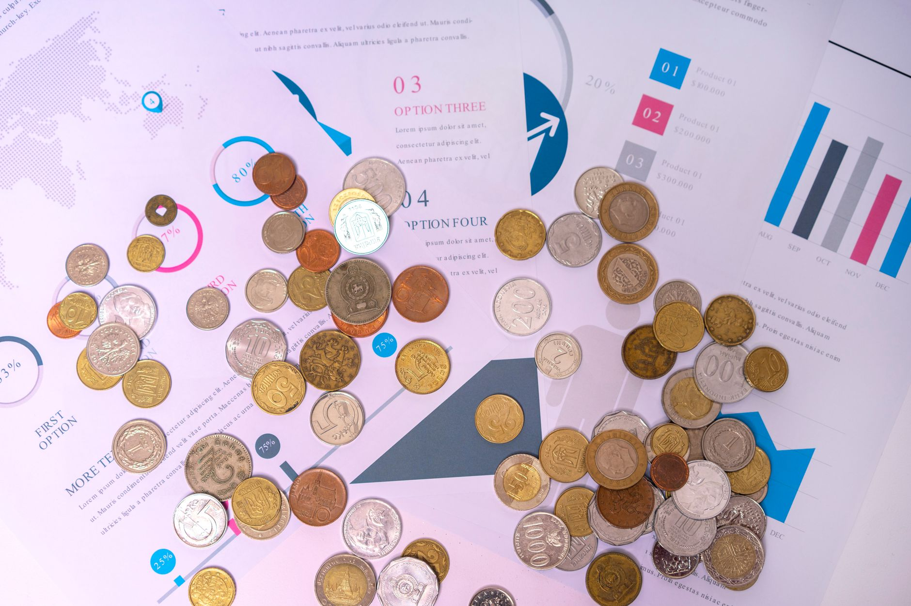

Are you considering investing in silver? Understanding where the bulk of the world’s supply comes from is crucial for informed decision-making. At Fused Distribution, we stock a wide variety of silver bullion and coins, and we recommend a diversified portfolio for long-term stability. This guide breaks down the top silver-producing nations, offering insights into their output, trends, and what it means for your investment strategy. Let’s explore the countries that dominate the silver market.

Why Silver Production Matters for Investors
Silver’s value is intrinsically linked to its supply and demand. When production increases, the price may soften, while a decrease in supply can drive prices higher. Knowing the major producers helps you anticipate potential price fluctuations and make smarter investment choices. Understanding the geopolitical factors influencing these countries’ output is just as important as simply knowing the production numbers. A stable supply chain is a key component of a reliable investment. Monitoring these production trends can provide valuable insights into potential price movements and overall market dynamics. Silver’s use in industrial applications, jewelry, and photography, alongside its role as a safe-haven asset, all contribute to its price sensitivity to supply and demand.
Top 5 Silver Producing Countries - 2024 Overview
Here’s a look at the top five silver-producing nations as of late 2024, based on recent data. It’s important to remember that production figures can fluctuate due to various factors, including mining regulations, economic conditions, and global demand. These fluctuations are often influenced by commodity prices, currency exchange rates, and global economic conditions.

- Mexico: Mexico consistently holds the top spot, accounting for approximately 24% of global silver production. In 2023, Mexico produced 863.7 million ounces of silver. [SOURCED STATS: Mexico produced 863.7 million ounces of silver in 2023.] This output is largely driven by the historic silver mines in the Sierra Taracaya region, particularly in the states of Sonora and Chihuahua. These mines have a long history of operation and benefit from relatively lower labor costs compared to some other major producers.
- Peru: Peru is the second-largest silver producer, contributing roughly 18% to the global total. Peru’s silver production reached 604.9 million ounces in 2023. [SOURCED STATS: Peru’s silver production reached 604.9 million ounces in 2023.] The country’s rich deposits in the Andes Mountains, particularly in regions like Cerro de Pasco and Potosi, fuel this significant output. Peru’s mining sector is a major contributor to the national economy, and the government is actively working to improve the sector’s sustainability and environmental performance.
- China: China’s silver production accounts for around 16% of the world’s supply. In 2023, China produced 544.8 million ounces of silver. [SOURCED STATS: China produced 544.8 million ounces of silver in 2023.] While historically a net importer, China’s domestic mining operations are steadily increasing, driven by government initiatives to secure a stable supply and reduce reliance on imports. The Chinese government’s focus on strategic industries, including electronics and renewable energy, contributes to ongoing silver demand.
- Australia: Australia holds the fourth position, responsible for approximately 12% of global silver production. Australia’s output totaled 414.3 million ounces of silver in 2023. [SOURCED STATS: Australia’s silver production totaled 414.3 million ounces of silver in 2023.] Major mines in Western Australia, particularly those operated by major mining companies like Newmont and Rio Tinto, are key contributors. Australia’s stable political environment and reliable mining industry make it a reliable supplier of silver to the global market.
- Chile: Chile rounds out the top five, representing around 8% of global silver production. Chile’s silver production reached 285.7 million ounces in 2023. [SOURCED STATS: Chile’s silver production reached 285.7 million ounces in 2023.] The country’s extensive silver deposits in the Andes Mountains are a significant resource, with operations concentrated in regions like Antofagasta and northern Coquimbo. Chile’s commitment to sustainable mining practices is a key factor in its continued contribution to the global silver supply.
Factors Driving Silver Production
Several factors influence a country’s silver production capacity. Understanding these influences is vital for anticipating shifts in supply and potential price movements.
- Geological Deposits: The presence of substantial silver-bearing ore deposits is the primary driver. The concentration and quality of these deposits directly impact the potential for silver extraction. Silver deposits are often found in volcanic and sedimentary rocks, and their size and accessibility are crucial.
- Mining Technology: Advanced mining techniques, including automation, improved extraction methods, and the use of specialized equipment, improve extraction efficiency and reduce costs. Investment in new technologies can significantly boost production output. Technological advancements like in-situ leaching (ISL) are being explored to access previously uneconomical deposits.
- Government Regulations: Mining laws and environmental regulations impact production timelines and costs. Stringent regulations can slow down production, while favorable policies can accelerate it. Regulations concerning water usage, tailings management, and worker safety all play a role.
- Labor Costs: Skilled labor availability and wages influence operational expenses. Lower labor costs can provide a competitive advantage for producers.
- Political Stability: Stable political environments are crucial for long-term investment and production. Political unrest and policy changes can disrupt mining operations. Social license to operate, a concept reflecting community acceptance of mining activities, is increasingly important.
Mexico: The Silver Giant
Mexico’s dominance in silver production is rooted in its vast, historically rich silver mines. The Sierra Taracaya region, in particular, is a prolific source. Mining in this area has a long history, dating back to the colonial era, and modern techniques are continually being implemented to maximize output. The region’s geology is characterized by extensive, shallow, and relatively low-grade silver deposits, making it amenable to open-pit mining. Also, Mexico’s relatively lower labor costs compared to some other major producers contribute to its competitive advantage. Currently, Mexico accounts for approximately 24% of global supply. Recent developments include the expansion of existing mines and the exploration of new deposits within the region, often utilizing techniques like heap leaching and flotation.
Peru: Andean Silver Power
Peru’s silver production is heavily concentrated in the Andes Mountains, where numerous large-scale mining operations are located. The country’s rich geological formations and established mining infrastructure make it a key player in the global silver market. Peru’s silver production accounts for roughly 18% of the world’s total. The country’s mining sector is a significant contributor to its economy, and the government is focused on improving the sector’s sustainability and environmental performance. Recent investments in modernizing mining practices, including the implementation of more efficient processing technologies, are expected to further boost production in the coming years. The government is also working to improve infrastructure and logistics to support the mining industry.
China’s Growing Role
China’s silver production has been steadily increasing recently. While historically a net importer, China’s domestic mining operations are expanding, driven by government initiatives to secure a stable supply and reduce reliance on imports. China’s silver production currently represents around 16% of the global total. This growth is expected to continue, potentially shifting the global silver balance in the long term. The Chinese government’s strategic importance of silver, driven by its expanding electronics and renewable energy sectors, is a key factor in this trend. Increased domestic demand and a desire for greater supply chain control are driving this expansion.
Australia: A Reliable Producer
Australia’s silver production is primarily concentrated in Western Australia, where several large-scale open-pit mines operate. The country’s stable political environment and reliable mining industry make it a reliable supplier of silver to the global market. Australia’s silver production currently accounts for approximately 12% of the world’s total. The country’s focus on efficient and environmentally responsible mining practices is a key strength. Australia’s abundant mineral resources and skilled workforce contribute to its consistent production.
Chile: A Stable Contributor
Chile’s silver production represents approximately 8% of the global supply. The country’s deposits are often located in complex geological formations, requiring specialized mining techniques. Chile’s commitment to sustainable mining practices and its stable political environment make it a reliable supplier. Chile’s large-scale, open-pit operations are known for their efficiency and relatively low production costs.
Looking Ahead: The Future of Silver Production
The future of silver production will likely be shaped by technological advancements, environmental regulations, and geopolitical factors. Increased automation, improved extraction techniques, and a greater emphasis on sustainable mining practices are expected to play a significant role. The development of new technologies like bioleaching, which utilizes microorganisms to extract silver, could also have a significant impact. Also, responsible sourcing and traceability will become increasingly important as consumers and investors demand greater transparency in the supply chain.
Common Mistakes to Avoid
- Ignoring Supply and Demand: Focusing solely on price without considering the underlying supply and demand dynamics can lead to poor investment decisions.
- Overreacting to Short-Term Fluctuations: Silver prices can be volatile. Avoid making impulsive decisions based on short-term price swings.
- Neglecting Geopolitical Risks: Political instability and regulatory changes in major silver-producing countries can significantly impact supply and prices.
Getting Started with Silver Investing
If you’re new to silver investing, here’s a simple starting point:
- Research: Learn about the different types of silver investments available, including physical bullion (bars, coins), ETFs, and mining stocks.
- Start Small: Begin with a small investment amount that you’re comfortable with.
- Choose a Reputable Dealer: Select a trusted dealer to purchase your silver. At Fused Distribution, we offer a wide selection of silver bullion and coins to suit all budgets. [LINK: Fused Distribution Silver Products]
Related
- Silver Supply Deficit Sixth Consecutive Year 2026
- Silver Mining Stocks Vs Physical Silver
- Silver Supply Shortage: What It Means For Prices
Read next: Silver Supply Deficit Sixth Consecutive Year 2026